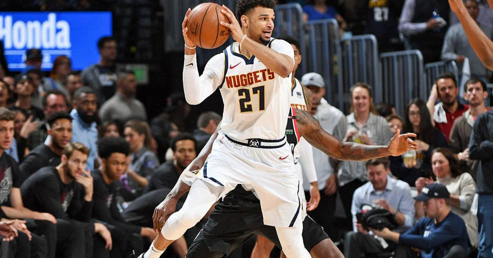

Nuggets Beat Suns in NBA Cup Group Play
Jamal Murray scored 39 points and Christian Braun added 31 as Denver beat Phoenix 127-120 in NBA Cup group play, taking control after three quarters and never trailing in the fourth.

Disclosure: this post contains affiliate links. I earn a commission on qualifying purchases.
Jamal Murray scored 39 points to lead Denver past Phoenix on Friday night, as the Nuggets beat the Suns 127-120 in NBA Cup group play.
How Denver took it
Denver took control after three quarters — and then never gave it back. The Nuggets never trailed in the fourth, closing out a seven-point win on the road.
The box score that matters
Final score: Denver 127, Phoenix 120
Jamal Murray: 39 points
Christian Braun: 31 points
Denver threes: 20
Why it matters
This was a two-man scoring night in the truest sense: Murray's 39 and Braun's 31 accounted for 70 of Denver's 127 points. And the three-ball was the weapon — 20 made threes as a team is a lot of damage from deep in any game, let alone a Cup group game where every result counts toward advancing.
The shape of the win matters too. Taking control after three quarters and never trailing in the fourth is the clean version of a road win — no late wobble, no giving Phoenix a window back into it.
Watch
Source: "NUGGETS at SUNS | EMIRATES NBA CUP 🏆 | FULL GAME HIGHLIGHTS | October 30, 2026" from NBA — the official full game highlights of Denver's 127-120 win, including Murray's 39 and Braun's 31.
Gear up: Fanatics